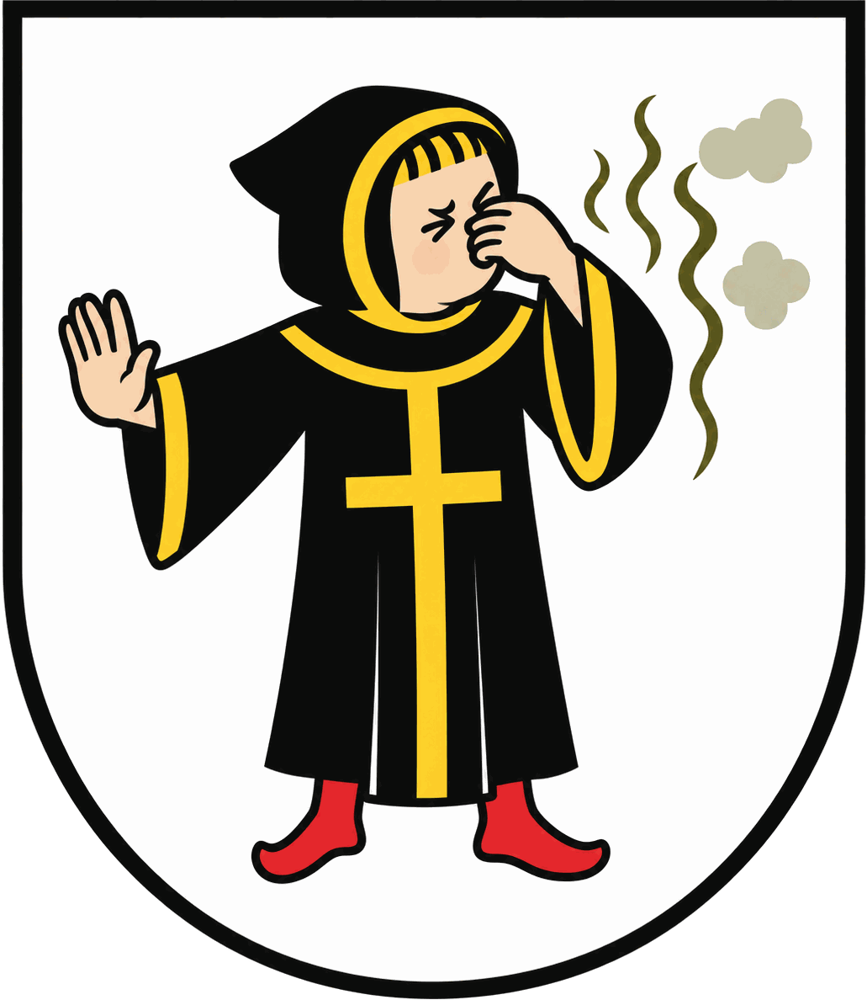

Bye Schlachthof
Ein Nachbarschaftsprojekt aus dem Schlachthofviertel
Jede Nase
zählt.
Einzelne Beschwerden bleiben Einzelfälle. Viele Meldungen zeigen das Muster, mit dem die Stadt ihre Kontrollen am Schlachthof gezielt ansetzen kann.
Wann?
Der Zeitpunkt deiner Meldung
Wie stark?
Deine Einschätzung von 1 bis 5
Welcher Wind?
Ergänzt die Seite automatisch
Das Muster
Damit Kontrollen zur richtigen Zeit kommen
So einfach geht’s: Stärke wählen, Standort bestätigen – fertig.
- 1Kaum
- 2Leicht
- 3Deutlich
- 4Stark
- 5Extrem
Jetzt mitmachen
Scanne den Code und speichere dir die Seite – beim nächsten Mal bist du in Sekunden dabei.
byeschlachthof.de
- Anonym
- Ohne Registrierung